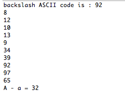

Brief note with sample Java code relating to:
We use binary (base 2), decimal (base 10) and hexadecimal (base 16) number systems in computing.
Octal (base 8) is also sometimes used.
Binary (base 2) uses two symbols
Decimal (base 10) uses 10 symbols
Hexadecimal (base 16) uses 16 symbols
0, 1, 2, 3, 4, 5, 6, 7, 8, 9, A, B, C, D, E, F
The letter symbols in hex are not case sensitive.
Therefore the following is an alternative to the above:
See Table 1: note, for example, 1111 base 2 is equivalent to 15 base 10 and F base 16
You are recommended to experiment using different values of all three systems at the online site here.
Americal Standard Code for Information Exchange (ASCII)
ASCII represents text in devices such as
ASCII: 128 characters
Example non-printable character
Example printable character
Further information available here
Unicode Standard
Presently represents more than 110,000 characters
Implemented in:
Most common Unicode encodings are
In this course we are interested only in UTF-8
UTF-8 uses:
Further information on UTF-8 is available online here
You are presently working from the folder ../labs/session07.
public class Encode
{
public static void encode() {
int decimal = 65;
int hexadecimal = 0x41;
char character = 0x41;
char character2 = 65;
System.out.println("decimal : " + decimal);
System.out.println("hexadecimal : " + hexadecimal);
System.out.println("character : " + character);
System.out.println("character2 : " + character2);
}
}
Invoke the static method encode and observe the output as depicted in Figure 1.
Here is an explanation of what's happening:
We conclude the method by printing the values of the four variables (Figure 1).
Study the values in Figure 1. In particular note the following:
System.out.println(Integer.toHexString(hexadecimal));
System.out.println(Integer.toHexString(0x41));
System.out.println(Integer.toHexString(65));
Add the following method to Encoding:
public static void characterExample()
{
/*
char backspace = '\b';
char formfeed = '\f';
char newline = '\n';
char retrn = '\r';
char tab = '\t';
char doublequote = '\"';//for string constants
char singlequote = '\'';//for character constants
*/
char backslash = '\\';
char lettera = 'a';
char letterA = 'A';
System.out.println("backslash ASCII code is : " + (int)backslash);
char[] chars = {'\b', '\f','\n','\r', '\t','\"', '\'', '\\', 'a', 'A' };
for(char c : chars)
{
System.out.println((int)c);
}
System.out.println("A - a = " + (lettera - letterA));
}
Invoke characterExample. The output is depicted in Figure 1.

Here is a brief explanation of the above code:
The following methods are to be added to Encoding class
Write a method to determine if 2 characters are equal.
Write a method to compare 2 characters.
Write a method to determine if 2 characters are equal, ignoring case.
Assume that ch1 and ch2* are letters.
Thus, for example, if ch1 is A and ch2 is a then return true.
Write a method to determine if a character is either a letter or a digit.
Write a method to convert a character as follows: